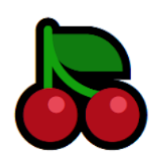

| Fresa | |
|---|---|
| La fresa es una fru- ta del bosque ade- cuadas en regimes dieteticos, dada que tiene escasa con- centacion de gluci- dos. tiene un sabor muy agradable aun- que ligeramente agro (algunas po- especies pue den tener sabor dul- ce). |
| Cereza | |
|---|---|
|  | La fresa es una fru- ta del bosque ade- cuadas en regimes dieteticos, dada que tiene escasa con- centacion de gluci- dos. tiene un sabor muy agradable aun- que ligeramente agro (algunas po- especies pue den tener sabor dul- ce). |
| Pera | |
|---|---|
 |
La fresa es una fru- ta del bosque ade- cuadas en regimes dieteticos, dada que tiene escasa con- centacion de gluci- dos. tiene un sabor muy agradable aun- que ligeramente agro (algunas po- especies pue den tener sabor dul- ce). |
| Banana | |
|---|---|
| La fresa es una fru- ta del bosque ade- cuadas en regimes dieteticos, dada que tiene escasa con- centacion de gluci- dos. tiene un sabor muy agradable aun- que ligeramente agro (algunas po- especies pue den tener sabor dul- ce). |
| Sandia | |
|---|---|
| La fresa es una fru- ta del bosque ade- cuadas en regimes dieteticos, dada que tiene escasa con- centacion de gluci- dos. tiene un sabor muy agradable aun- que ligeramente agro (algunas po- especies pue den tener sabor dul- ce). |